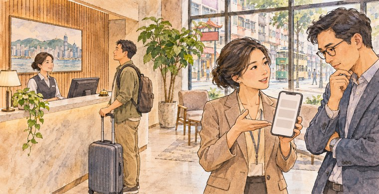

HSP-35 · 香港 · 15–20分鐘 · 顧客參與 · 自助服務設計 · 整體服務工作量
由住客動手，服務就更簡單嗎？

自助服務重新分配服務工作
自助服務研究和服務藍圖指引都提醒管理人員，要考慮整項服務，包括顧客要做的工作和後台支援。看得見的環節做得快，不代表整體工作量較少。下文的住宿設施、流程觀察和數字均屬虛構，並非來自任何酒店品牌或研究。
課堂決定
你管理虛構的香港服務式住宅 Harbour Rooms。選擇 A：一般抵達個案仍預設由職員協助辦理入住；或選擇 B：預設先邀請住客自助辦理入住，是否採用由住客決定。在 B 下，住客可立即選擇全程由職員協助辦理入住，不會受罰，也不會受到壓力。
兩種設計均保留相同的安全身分核實及進出權限查核、私隱保障、無障礙協助、語言支援和緊急支援。客房、價格和已確認的入住權益維持不變。職員絕不要求住客透露帳戶密碼或繞過查核。本練習比較的是服務工作，而不是要不要履行這些責任。
一般抵達流程的試行報告起初只列出大堂等候時間和接待櫃枱職員的工作時間。下列時間是按每宗抵達個案計算的算術平均數，並非同一時間所需的人手。B 的櫃枱工作量大幅下降，但首份報告沒有計入住客的準備工作和遙距支援。現有資料並未證實有裁員、薪酬開支節省或服務處理能力提升。
只有當量度結果顯示住客仍能完成流程並取得客房進出權限，平均實際操作時間沒有增加，而服務供應方的職員工作量有所減少，管理層才會更改預設安排。這是本個案給定的服務目標，並非普遍偏好。兩種設計連同所需支援均在已獲撥款的預算之內；本個案不比較軟件和人手成本。
初步報告（只涵蓋部分流程）：每宗抵達個案的分鐘數| 量度項目 | A | B |
|---|
| 大堂等候 | 4 | 1 |
| 接待櫃枱職員工作 | 6 | 0.5 |
你的決定這份只涵蓋部分流程的報告，是否足以支持更改預設安排？先指出報告漏了哪些住客和職員的工作，並界定何謂完成入住手續，再比較兩種設計。
第二輪 · 多了一項資料
完整的虛構試行紀錄涵蓋每種設計各100宗一般抵達個案，沒有遺漏紀錄，也沒有中途放棄的個案。應將這兩組資料用於核算流程工作量，而非視為隨機實驗或對整體住客行為的預測。B 組由自願嘗試自助辦理入住的人組成，不包括一開始便選擇由職員協助的人。
在 A 下，每名住客花六分鐘實際完成由職員協助的流程，抵達前無須做任何準備。服務供應方每宗抵達個案投入六個櫃枱職員人分鐘，並無額外的入住支援工作。大堂等候時間另行量度，平均為四分鐘，不計入實際操作時間。
在 B 下，每名住客抵達前花六分鐘閱讀指示及提交所需資料，抵達時另花兩分鐘操作。這八分鐘已包括未成功的嘗試。100人中，有八十人無須補救便完成流程；二十人因客房進出權限未能啟用，需要額外協助。
這二十名住客在已計入的八分鐘以外，每人再花十分鐘配合支援人員處理問題。每宗補救個案另需遙距支援職員投入十二人分鐘，其中兩分鐘用於無須住客參與的紀錄工作。B 組每宗抵達個案除了已呈報的0.5個櫃枱職員人分鐘，還需0.5個後台職員人分鐘。
每組的100名住客最終都獲授權進入客房，並明白入住指示；這就是本個案界定的完成標準。B 組平均一分鐘的大堂等候時間並不包括遙距支援所需時間，因此不是整個流程的用時。其他等候時間和全程經過的時間均沒有量度，不要自行假設任何一項。
由職員協助的後備安排仍有足夠人手和經費。這些資料不能預測日後會有多少住客選擇哪種方式。重新設計表格或降低失敗率，並非題目給出的免費選項；任何改動都須估算成本並重新測試。這份課堂紀錄沒有使用真實的身分資料。
你的決定計算每組100宗抵達個案中，住客的實際操作時間及服務供應方的職員總工時。區分 B 組無須協助的完成率和最終完成率。按既定目標，現在應否把 B 改為預設安排？重新考慮之前，你會量度甚麼？
講評 · 逐項核算住客的工作
A 需要 100 × 6 = 600 個住客人分鐘，平均每宗抵達個案六分鐘。B 需要 100 × (6 + 2) + 20 × 10 = 1,000 個住客人分鐘，平均十分鐘。B 多用了400個住客人分鐘，即平均每宗多四分鐘。大堂的隊伍短了，準備和補救的工作卻沒有消失。
B 組無須補救的八十名住客，每人實際操作八分鐘；需要補救的二十人則各花十八分鐘。平均數為 (80 × 8 + 20 × 18) / 100 = 10。不要只用無須協助便成功完成的住客來計算平均數，也不要把補救組最初的嘗試計算兩次。
講評 · 逐項核算服務供應方的工作
A 用了 100 × 6 = 600 個職員人分鐘。B 用了 100 × (0.5 + 0.5) + 20 × 12 = 340 個職員人分鐘，平均每宗3.4人分鐘。按這些紀錄，服務供應方節省了260個職員人分鐘，而不是只看櫃枱工作所得的550人分鐘。遙距和後台工作同樣是實際工作。
減少260人分鐘，不等於節省現金，也不代表可以削減支援。紀錄沒有提供薪酬水平、軟件成本、排班、高峰需求或最低人手配置的資料。住客和職員的工作可以同時進行，但所花的是不同人的時間。把兩者相加，得出的是總人時，而不是實際經過的時間或各方認同的金錢價值。
講評 · 釐清分母和完成標準
B 無須協助的完成率為 80 / 100 = 80%；計及補救後，最終完成率為 100 / 100 = 100%。A 按原定方式由職員協助辦理，最終完成率同樣是100%。把 B 稱為「100%自助成功」會掩蓋補救工作；拿 B 無須協助的完成率與 A 由職員協助的完成率相比，則混淆了不同指標。
B 的結果只適用於自願嘗試這種方式的100人。這些結果不能說明全體住客採用自助方式的比例、立即選擇由職員協助的住客有何結果，也不能確立在受控條件下的因果效果。評估實際的預設政策時，應分開記錄獲邀人數、各方式的選擇人數、嘗試宗數、補救宗數，以及最終取得客房進出權限的宗數。
講評 · 按既定目標作決定
按給定的目標，目前應保留 A 作為預設安排。B 減少了服務供應方的工作，住客最終仍能取得客房進出權限，但平均實際操作時間由六分鐘增至十分鐘。單是縮短大堂等候時間，並不符合住客工作量不得增加的條件。這個結論不排除讓住客自願選用自助服務。
如果管理層認為能自行選擇時間辦理，比減少實際操作時間更重要，可以另訂明確目標，並調查住客的偏好。單憑這份紀錄，無法作出這項價值判斷。即使 B 完全無須補救，住客仍須實際操作八分鐘，因此只解決失敗問題，仍達不到 A 的六分鐘基準。
講評 · 測試整項服務
繪出整個流程：提供指示、抵達前輸入資料、抵達時的操作、取得客房進出權限，以及發生例外情況時的補救。查找不必要的重複輸入或不清晰的指示，但不要取消必要的查核。測試修訂流程時，須在預期使用者中觀察住客和職員各自要做的工作，並記錄完成情況；也要納入不選用或中途停止使用自助服務的人。不要因為住客有裝置，就推斷服務符合無障礙需要。
抵達前後都應分開量度等候和實際操作時間，並沿用同一完成標準。不要只看平均數，也要了解補救耗時較長的個案。聲稱有節省之前，先記錄支援處理能力和完整成本。任何重新設計都必須保留無障礙的職員協助選項、私隱保障和安全的進出權限管控。
教師說明
先請學生根據只涵蓋部分流程的大堂報告作初步決定，再公布完整紀錄，讓學生分開計算住客和服務供應方的工作量。比較600與1,000個住客人分鐘，以及600與340個職員人分鐘。重新討論預設安排前，要求學生同時列出 B 無須協助的80%完成率及100%最終完成率。
SUS-16 探討使用障礙及可獲協助的預訂時段；HSP-26 探討涉及多家服務供應商時的全程服務責任。本個案追蹤同一住宿業入住設計如何在住客與服務供應方之間重新分配工作。數字是為核算練習而虛構的資料，並非證明成效的試行證據。不從所列來源推斷任何法律規定或真實酒店的失敗率。
第二輪
完整的虛構試行紀錄涵蓋每種設計各100宗一般抵達個案，沒有遺漏紀錄，也沒有中途放棄的個案。應將這兩組資料用於核算流程工作量，而非視為隨機實驗或對整體住客行為的預測。B 組由自願嘗試自助辦理入住的人組成，不包括一開始便選擇由職員協助的人。
在 A 下，每名住客花六分鐘實際完成由職員協助的流程，抵達前無須做任何準備。服務供應方每宗抵達個案投入六個櫃枱職員人分鐘，並無額外的入住支援工作。大堂等候時間另行量度，平均為四分鐘，不計入實際操作時間。
在 B 下，每名住客抵達前花六分鐘閱讀指示及提交所需資料，抵達時另花兩分鐘操作。這八分鐘已包括未成功的嘗試。100人中，有八十人無須補救便完成流程；二十人因客房進出權限未能啟用，需要額外協助。
這二十名住客在已計入的八分鐘以外，每人再花十分鐘配合支援人員處理問題。每宗補救個案另需遙距支援職員投入十二人分鐘，其中兩分鐘用於無須住客參與的紀錄工作。B 組每宗抵達個案除了已呈報的0.5個櫃枱職員人分鐘，還需0.5個後台職員人分鐘。
每組的100名住客最終都獲授權進入客房，並明白入住指示；這就是本個案界定的完成標準。B 組平均一分鐘的大堂等候時間並不包括遙距支援所需時間，因此不是整個流程的用時。其他等候時間和全程經過的時間均沒有量度，不要自行假設任何一項。
由職員協助的後備安排仍有足夠人手和經費。這些資料不能預測日後會有多少住客選擇哪種方式。重新設計表格或降低失敗率，並非題目給出的免費選項；任何改動都須估算成本並重新測試。這份課堂紀錄沒有使用真實的身分資料。
你的決定計算每組100宗抵達個案中，住客的實際操作時間及服務供應方的職員總工時。區分 B 組無須協助的完成率和最終完成率。按既定目標，現在應否把 B 改為預設安排？重新考慮之前，你會量度甚麼？